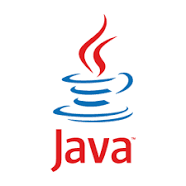
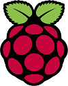
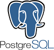
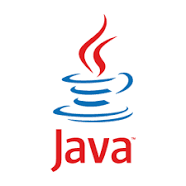
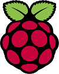
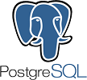
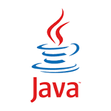
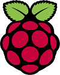
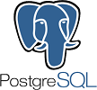

よく使う言語 & ソフトウェア
 





私は現在、情報系の専門学生をしています。
高校の頃は主にMS OfficeやAdobe、C言語、Javaを学んでいました。
専門に入学してからは、幅広い言語やサーバー周りについて学び始めました。
ネットワーク・セキュリティ専攻に進み、サーバーの構築を本格的に学んでいます。
主に開発するものはWebアプリやAndroidアプリです。言語としてはJavaやPython、Rubyを主に使用しています。
趣味として専門書を読み漁ったり、外部の勉強会に参加して色々学びを得ています。


